This program consists of a collection of tools for powder X-ray powder diffraction.
This is a variant of a previously one, known as Powder3 , 2..etc, and down
to Convert v3 which was capable of various data file conversions. These functions
are still available in this program. The goal is to write a comprehensive
package for the X-ray diffraction on powders, I have to say that this version
is far from that goal. This small help file should give some info about this
program, probably a heuristic method will be better for the user. However,
at this moment the conversion function is still the main function of this
program. A graphic interface for peak hunting and peak profile analysis was
also added.
Since I start working on
X-ray powder diffractometry I noticed that almost each program required a
different form of the data file (quite normal, different authors, different
programs). There was quite a pain to convert the data file from an instrument
to an appropriate format for use with another software. So, not willing to
do the conversion by hand, I wrote some small routines in some variants of
Basic and/or FORTRAN (which has a very good Format function) to do the job.
There were no fancy interfaces or help. I had to write then nicer routines
for some of my colleagues. And I had then the (good ???) idea to write a more
general program for such types of conversion. This was Convert 1.0. That version
was written when doing my PhD at Université Paris Sud (1994; this wasn't
what I supposed to do...!); it was written in a french version of Visual
Basic 3.0. Another version and a bug hunting followed when I was working at
University of Bucharest. The version 3 was written in '97 at University of
Tokyo (Visual Basic v5, a japanese version; so some error messages may look
funny on your computer).
For the exact version look in the About form (a window is called here Form),
the help file may not be up to date. Due to a severe lack of time as
well as a lack of motivation (I have no ideea who is using the program anymore
because there is no feedback from the users) the development of this program
will probably stop.
This is the version 4 of Powder, a 32 bits version and can run in Windows
95 or NT 3.5 or, I hope, above. I didn't find any bugs in this version but
I think that it may contain some (an even number...). If you find any, hopefully
sooner, please let me know and I will try to correct them. I can not guarantee
a support to this program since I have a job; that will depend entirely on
my free time. However, before asking me something read the help file and follow
the advises in the notice.
The author of this program is:
Dr. N. Dragoe
LPCES-ICMMO, Université Paris Sud
Bat. 410
91405 Orsay, France
nita.dragoe@lpces.u-psud.fr
It is useful mainly for people
doing X-ray diffraction experiments although the program can be used with
different data types or instruments (I am using it for conversion of UV/VIS
spectra ASCII data where the X values are in a decreasing order; so a negative
step can revert this...).
This program can read and write some of the data files I know : DBWS, GSAS,
Philips, Siemens, Scintag, ASCII files, MXP18 data, WPPF.... Some other files
can also be read with this program.
A quite different function was added recently : a unit cell refinement calculations
and HKL generation functions.
There are several different windows in the program, called here Forms or Pages.
About-which contains the version number and with the program starts. This form can be viewed at any time from the Help/About menu. To start the program you must click on the icon or in the text area in the form.
Main form- which is practically the old Convert 3 program.
Merge files - two functions for merging files, useful for variable counting time (hereafter VCT) data acquisitions
Graphic - GUI data management, background removal, peak hunting, etc
Rietveld/gDBWS - Rietveld file preparation and graphical interface
UnitCell-is a form added for utilities related to unit cell refinement
The main form of the program has one text region where some info is printed from time to time and few commands available in a menu. This area is called “report pad” , refer to the information printed here during the execution of this program. Most of the output, except the saved files, will be listed here.
There are few menus in this form. Click on the appropriate keyword for more information.
Open
Save as
Merge XY
Merge XYZ
Batch mdi -> GSAS
Save Report pad
Shell to Notepad
Quit
I don't
have a header...
Ignore first ...
Read HSTDMP
from GSAS lst file
Read REFLIST from GSAS/rfl file
Compute d/angle
Remove strange characters
Truncate data
Swap X, Y
Show report
Clear report
About
Contents - html file
Author WWW page
CCP14 web page
This menu contains the following sub menus:
Open
Save as
Merge XY
Merge XYZ
Batch mdi -> GSAS
Save Report pad
Shell to Notepad
Quit
This command open a raw data file and read the data in memory. You should choose the file format you have otherwise strange effects may occur. The program accepts the following commands (as sub-menus) while in File-Open menu:
Scintag data
Siemens, ascii
The first value as Y
The first 2 values as X, Y
The first 3 values as X, Y, Z
In DBWS format there is a
first line with : starting 2theta, step, final 2theta and a title (in FORTRAN
is 3F8, A56). This is the first line in the file, called in Powder
as header. Note that, like in all cases in this program, the starting
2 theta is the first value and not start_2theta+step as is the case elsewhere
!!
The rest of the file are in 8F7,1X format. Only the first 56 spaces are
read since some old data files have a comment or card number in the columns
72 through 80 (this area was reserved for comments in the old days). The
values read from the header will be later used to generate the X values,
if necessary. Although it reads a title here, the program will prompt you
to set or modify the title when trying to save the data. You can use this
command only for data files having 8 values on a line, otherwise you may
obtain strange results.
Refer to the Header commands if you want to find out
how to ignore the header read from this file. This may be useful when wanting
to change the value of the 2theta (although I can not see the reason for doing
this).
GSAS is the well known program
written by A.C. Larson and Bob von Dreele from LANL.
You can read a GSAS-ESD constant wavelength. In Powder there are
some limitations regarding Gsas files. Some of the records (except starting
two theta, step and the number of points) are ignored in this program. For
instance "Instrument parameter" which is optional in the Gsas file is completely
ignored here, as well as BINTYP info (read the GSAS manual for more information).
The data is read as 5 values and corresponding ESD's on a line until the
EOF marker is found. The normal GSAS data may have few BANK records in a
file, here the first BANK record is read.
Same general comments are available for STD file; ten values in each line
are accepted here. For use of the GSAS files I strongly recommend to read
the instructions in the GSAS User Manual. Note that in the new version of
GSAS a file converter is available.
This format is similar to that of DBWS but having 10 data on each line. Here only the first 64 characters on a line are considered.
With this function you can read a Philips (now Panalytical) UDF file. The UDF files which I know have a header (about 20 lines) and then the diffraction data as eight characters in a row, separated by commas. Powder is looking for the RawScan statement then reads all the data. From the UDF header most of the fields are ignored, this applies as well when writing the UDF file. If you don't want to use a header, the same file can be read by Y, free ascii command.
This format has a header
on four lines with a title and some other details (monochromator, date, etc).
The important part is on a line with starting 2theta, step and ending 2theta
each having 8 characters. Then the Y data are read as one value per line,
the 2theta are computed from the header info.
This file type is similar
to that of Philips, i.e. a big header which is mostly ignored by Powder
and 2theta, intensity and esd. Although it is not convenient, the same file
can be read ignoring the header, as XYZ free ascii.
The format of this file is
quite similar to the Philips or Scintag ones, a header followed by data written
as 8 values on each line. As before, from the header information only some
fields are requested.
WPPF and Profit are two different programs written by Hideo Toraya. These programs can read two distinct data files either as 8 or 10 values in a line. The program detect the data type you have and read it either as 8 or 10 values in a row, as appropriate. From the header of this file, some info as the wavelength or counting time are ignored.
the first value, as Y
the first 2 values, as XY
the first 3 values, as XYZ
On this menu, three commands
are available giving the opportunity for reading only the first value, the
first 2 values, or the first 3 values from each line. This is useful only
if there are more data in a row than x, y. These commands do not allow a header,
you will be prompted for additional information if necessary. If the data
file contains some titles, use the available commands to ignore these lines,
see the Header menu.
You can read Y values no matter the format is, as long as the data are separated by comma or tab or spaces and no empty lines are in between values.
Read X and the corresponding Y in any format as long as the values are in pairs (i.e. in each line the final value must be for an Y value.)
Read X, Y, Z from any ascii
file. Z is usually considered the ESD value for each Y. However, in this program
no ESD estimations/correction are made, if necessary Z will be filled with
1.0.
This is a binary data file from the Mac Science diffractometers on NT systems. Read some details from a header as well as X and Y. Instructions relative to ASCII file do not apply here (for instance, ignore lines, etc), this is a binary file.
This is a binary data file
from the Mac Science MXP18 rotating anode diffractometers.
Read some details from a header as well as X and Y. Instructions relative
to ASCII file do not apply here (for instance, ignore lines, etc), this
is a binary file.
A different format came from Philips and now is in use with the recent Panalytical diffractometers : the RD and SD ; these are binary files and Powder is able to read the RD and SD 3 to 7. Note that recently, an additional format is available from Philips/Panalytical the .xrdml. As of now there is no function associated with this format. I recommend the use of a UDF file format instead of the RD files.
This function, coupled with the Ignore lines command, allows the reading of files on columns (or even diagonally !!). A small window will ask for the number of point n1 to be read following by “skipping” n2 points. For instance, reading an ASCII file having three columns : n1=1 and n2=2 will allow the reading of the first column while n1=3 and n2=2 will read the third one. If n2 is different than 2 then the data read is on “diagonal”. Give it a try but make sure to check the output (note that some UNIX characters may be considered “data so the output of this function may be affected by this; a solution is to apply the “Remove strange characters” function to this kind of files).
Write the last set of data read in the selected format. If necessary,
the program will ask some details about the data, such as the 2 theta... Some
notes applies for each format. The program accepts the following commands
(as sub-menus):
DBWS
GSAS - CW ESD GSAS - CW STD
LHPM
Philips UDF, Siemens, Scintag
RIET7
WPPF/Profit
Y, XY or XYZ ascii
DPLOT file
This command save a file
in a DBWS file format.
The output file for GSAS is limited to some constants. For more advanced data type use the built-in convert program from the GSAS package (or edit the file manually). No "Instrument parameter" is written in the output file, the BANK number is always 1. Check the data file for 80 characters in length, GSAS requires this (Powder fill with spaces up to 80 chars but if you edit this files with other editors check if you still have 80 characters on each line).
A small example of using GSAS conversion follows (as shown on www.ccp14.ac.uk) :
With the latest Powder4 for Windows by Nita Dragoe will allow you to convert an x,y,esd powder diffraction file in column format into GSAS ESD format.
First run Powder for Windows
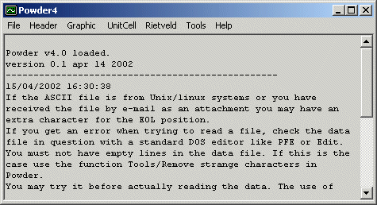
Click on File, Open, X Y Z Free ASCII and select the column format data file.
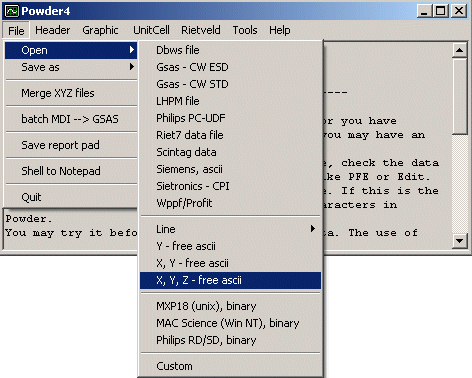
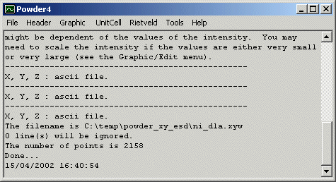
Click on File, Save as, GSAS - CW ESD. Provide the filename (preferably with a .gsa or .gs file extension.) Done!
It is advisable to look at the resulting file and compare the top and bottom with the original data to see the conversion did go OK.
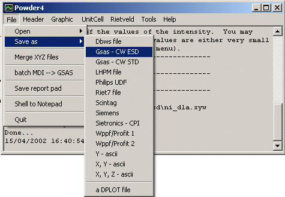
The LFPM format is similar to that of DBWS but having 10 data on each line.
In Philips, Siemens and Scintag files, most of the header is fixed, you can manually change the values to your preferences.
Both format types in WPPF/Profit neglect the wavelength value and the counting time. The wavelength will be always of copper Kalpha 1. You can change later this value, see the Wppf or Profit user manual for this.
This format has a header on four lines with a title and some other details (monochromator type, date, etc). The important part is on a line with starting 2theta, step and ending 2theta each having 8 characters. Then the Y data are saved as one value per line. As for the UDF format the info in the header are always the same and not relevant to this program. You may need to change these values by using a classical a text editor.
Not much to explain here, the output is in ASCII with one record per line. The first line is a date stamp of the Powder4.
This command save the data file in a Dplot file. Dplot is a very good freeware program for scientific graphs. I quote from the Dplot help file: "DPLOT is a general purpose X-Y plotting program that allows you to view, manipulate, and produce hard copies of data in a variety of formats". The package can be found at http://www.dplot.com
There are two submenus in the Header option :
Selecting this option (it is ON if there is a check mark on the menu) allows the reading of data file which do not have a header definition. This has no other meaning that instructing the program not to “look" after the 2theta, and so on.
With this option, n
lines from data file can be ignored. The user should choose how many lines
to be ignored when reading a data file. For instance, if you have an ascii
data file and in the first 3 lines there are some comments, you can choose
Ignore first then input the value 3. In this case the program will ignore
the first 3 lines in your data file. You can ignore as many lines as you want
(limited to 32000 though !).
Another possible use: if you want to read a DBWS file and modify the 2 theta
values, select I don't have a header option and then Ignore
1st line. The program will skip the 1st line and then start to read
data directly, not searching for the X values. It will ask for it at a later
occasion, if necessary.
If the program has successfully read a file the data in memory is kept and this function will open the graphic routine. If necessary the X data will be asked as starting 2 theta and step 2 theta. Note that by opening the Graphic page the main page of the program will, temporarily, disappear. For more detailed explanations on how to use the graphic routines see the tutorial section.
Only the first 32000 pairs of data are shown in the graphic routine. If you have larger datafiles you can select, by removing some parts of the file with the command Tools -> Truncate data, which region to be seen in the graph.
Warning : depending upon the system you are using, the pegraphs.OCX may be required to be registered with regsvr32.exe *.ocx.
This is an independent routine in this program, no data is necessary to be read before starting these functions which are related mostly related to the indexation and refinement of the unit cell. Some practical details about these utilities are given in the tutorial, more can be found here.
This function is not well tested and it is not anymore under development. I had no time to make a help file for it, it is a GUI DBWS version with Rietveld graphs capabilities. Give it some try,...but unless you are familiar with DBWS I recommend you to check Winplotr/Fullprof or Expgui/Gsas programs.
The menu Tools contains the following commands:
Read HSTDMP from GSAS lst file
Read REFLIST from GSAS/rfl file
Compute d/angle
Remove strange characters
Truncate data
Swap XY
Show report
Clear report
These commands are related
to GSAS package. The first one request a GSAS results file, *.lst. It will
search in this file the occurrence of "Program HSTDMP" string. When it can
find this, a file named _hstdmp.dat is created in the application directory
(Warning - it will erase an old _hstdmp.dat file). This file contains the
data output from HSTDMP program. If two or more statements are found the data
set will be attached one after another without a separator. This command may
depends on the GSAS version you have. You can use the _hstdmp.dat file for
another application (your preferred graph editor..)
Read Reflist from GSAS/rfl file request a .rfl file written by GSAS.
This file can be saved by the Tools/Reflist menu command with the option R/ascii
file. With this function you can read h,k,l Fo and esd(Fo) from Gsas and
save a Shelx .hkl file (for structure determination or use of these data with
another software). The program Powder will ask for a batch number which
is an optional field in Shelx (for those making batch refinements). The output
file will be merged. The format in the output file is as required by SHELX
97, I don't know if works with older versions but I guess it does so..
This option allows to skip all characters from the extended code and from command code (smaller than 30). It is useful when the data come from some Unix software which have a different ascii character set, as my MXP18. It is a time consuming option (this is relative, 5 seconds with 5000 data on my laptop). To be honest, often I use this command without an obvious reason (some files, depending on the programs saving them, give errors when read by Powder. I guess that this is related to the EOL chars).
This option allows to (irreversibly
!) delete some parts from the data file in memory (no changes are ever made
to the input files). It may become useful if you want to analyse a smaller
region of the data file or in the rare case of data files larger than 32k
pairs of data. Note that the program (in theory) can read 2 Gb sets of data
!!
Toggle a small utility for
computing d or diffraction angle for a given radiation. When working with
this routine, the report -a kind of activity log- is not visible anymore;
however it is still there (if you want to read the report toggle OFF this
function and ON the Show report command)
This function interchange
the X and Y data in memory. Generally it is not useful for X-ray diffraction
data but for other type of data file.
In the main form, a text
area shows what is going on, what was the filename, how many lines it found
in it, and so on. All output from the Unit Cell routine is directed here.
May also be useful for some debugging purposes.
You can toggle the visibility of this report pad (it is still in memory).
From time to time (when this pad has 32kb) the report will be appended to
a file called _rpbackup.dat and will be erased from the screen.
This file is in the working directory (Warning- NOT the application directory);
take care and clean this file from time to time as it can get very large...
A self explaining command,
be careful : no UNDO is available.
You can also clear or copy/paste data to this report at any time. Use the
Right_Click button of the mouse to see a PopUp Menu with common commands under
Win95 (as Select, Copy,...).
Shows the About window of
the program. Nothing interesting there except the version number of the program
(or the author ?..). When you have trouble and want to ask some questions
(after reading this help file and after you have already
let me know you use this program !), report this version number.
Open this Help file in the
default browser. You can also edit this file and change whatever you like
(I will be glad to put your comments in the future help files!)
Open the default browser
and go to my WWW page (there might be an update or another version of this
program). The page location is read from the ASCII file _PwdInternalData.txt
from the application directory. You can edit this file and change the URL
of the author page. If this file isn't there, the program will try at the
address internally stored.
back to top
This form will help you in refining a unit cell and to generate hkl and d's. It is also useful when reading some data (it can read a specified column from the file, etc..).
There are few menus which
will are discussed later in this file. The unit cell, both for cell refinement
and hkl computing, can be selected from the listbox named Cell, just
click on it. In its right side there is a similar one where you can select
the Wavelength or, if you use something rare -as a synchrotron- put
the actual value in the associated text field.
The grid in the middle of the image is referred here as Data grid,
where you -or the program- will put some data. You can change the data type
in the column 4 just by clicking on the top of the grid (you can toggle between
d/A, theta, 2 theta or E/keV for energy dispersive data). You can put a lot
of data here but you have to be patient, in this case the program is rather
slow, although I am not sure about the upper limit of the MSFlex grid, I
guess you can put more than 15000 rows...). For refinement you have to insert
data there, no empty lines allowed, the order is meaningless.
The grid in the right part of the form is the standard grid where you should
insert the expected and observed values for your standard material.
Important note: use the same data type as in the data grid, therefore
you can put here, d, theta or 2theta depending on what you have in the data
grid..
The data inserted in the standard grid will be used for a calibration, if
and only if, the associated check box is ON (named Use standard). The
correction for 2theta is made with an interpolation polynomial for the difference
in theta/2theta or d relative to theta. The program computes such a difference
with a pseudo-Inverse routine i.e. an over-determined system (frankly speaking,
a least squares!).
You should remember some mathematical basics, the polynomial interpolation
may give strange results. However the corrections are printed on the report
pad in the main form; check them out. In this version, the polynomial degree
can be comprised between 0 and 8; although I recommend a value between 1 and
4. Two observations here:
-do not use a high degree polynomial (I suggest you not to go over 4
or 5) unless you have a lot of data somehow homogeneously distributed over
the 2theta domain (about 20 to 30 data for a good conditioning) and not too
far from the initial and final values.
-0 polynomial is not a zero error if the inserted data is d.
There are checkboxes associated
with text fields, such as a, b, c...etc. In the refinement, the meaning is
to refine or not the corresponding parameter; there is no meaning for them
in the hkl generation routine.
The lower left part shows a text field meaning refinements Cycles.
In this example, when the method of refinement is Least squares (see later),
10 refinement cycles will be made.
Another important note: by weight In this program the value of w in the relation is considered:
w(Yo-Yc), so don't put the
esd's on the column 5 but 1/esd.
The available menus are (
they are quite self-explaining ) :
Similar to the Ignore function from the Main form. The program will ask how many lines from a data file should be ignored. Usually, the data files contains some headers and comments, by this command one can import data by ignoring few lines and thus avoiding editing and saving it under other name, etc.. Initially this menu will have the caption "Ignore:none" and after activated this menu will show how many lines will be ignored.
This function will import
data from an ascii file and put these data in grid. Note: each record should
contain four data or five data (the last is for a weight). The selection between
the two option is made with submenus. These data can be either each record
on one line either sequentially in an ascii file. If the four values are
read, the weight column will be filled with 1. Special functions for editing
the weight are available in the Edit menu.
If the data file are in a different format it still can be read with the
command Input data in column, available in Edit menu.
A two column ascii file will be read into standard grid. Warning: If the data in the standard grid are not the same type as those in the data grid, you'll get a mess.
The data from grid can be saved into an ascii file. This function is useful either for storing the datafile for further reference or to export a generated hkl, d pattern.
Close the Cell refinement form and loose all the data you have in grid.
These functions refer to the data grid only. You can insert or delete rows in the grid, if you want to modify your data (delete column will delete data but not the column...). Delete row is in fact equivalent to a Cut command and is very useful because you can not have empty lines in the data grid (the program will "read" how many data you actually have by checking an empty line.)
These commands are similar, they will add a value (or multiply with one)
to a column in the data grid. The program will ask which column you want to
modify (H is considered the first column). You can add or multiply weight
with the value which is in another column (but the same row). By this mechanism
you can change the weighting scheme for the refinement.
Take care: if you put 0 in the weight column that data row will be neglected
in the refinement.
This is a very powerful function which allows you to read only one column from a data file (or read some data and skip others in a regular manner). The program will ask in which column the data are to be inserted (again, the column 1 is H). The second question is which values will be skipped (read one values and then skip n), you'll be asked about this n; n=0 means to read all the data.
You can clear one or both of the grid at any time.
When inserting data from files, to avoid errors the program automatically will increase the number of rows (often to much). By this command you can set the number of rows to a reasonable value. Sometimes this can save some time. If the grid has (because of unfortunate input files..) 1000 rows but you have only 100 data points it is better to set the data rows to 100 to save some memory (anyway, in my opinion -from time to time- 5 seconds more or less it is not a big deal !).
The unit cell parameters
are calculated by least squares (all three methods have some least squares
procedures inside) and I recommend you to use the first option (however, is
the only one who gives the standards deviations for the cell parameters).
Both least squares and overdetermined system, Newton use the
same algorithm of Newton, the difference is in the solution of the linear
system (first one is a Crout type and the second one is a Gauss-Jordan). The
second method is less convergent than the first one because of a dumping
factor I imposed, but seems to be more stable. You should check if you arrived
at a convergence, the values for the sq. deviations at each cycle are printed.
A fancy called multidimensional search is just a search for the
minimum of the squared difference between Q and its expression reciprocal
terms. This is done by a modified Interval halving method. I will explain
this method because is very easy to put in code (although its value is limited)
and because it is not a recommended method for refinement, especially for
lower symmetries.
Starting from an initial
guess (no matter how far from the minimum) one can find the minimum of a function
f=(y1-y2)2 where y1 is an experimental
value and y2 is a model depending of some parameters x1,
..,xn which have to be estimated. If n is not too high one can
make a search in an interval and compute the function f at each step, the
minimum f will be an estimate of the solution x. The error will depend on
the step size and on the fact that the actual minim is comprised in the search
range.
In this function, if the minimum is not comprised in the search range, the
width will be adjusted toward the minimum.
This procedure is implemented here (test it if you like but think how long
it will take!). The width shows how far from the initial point it will
search the minimum, the steps/cycles is how many steps will make on
each variable on each interval and refine shows how many times to
do this with a halving of the width for each cycle.
For each refine the step will be smaller with a 1/q factor where
q is the number of refine in the textbox. The fields Width
and refine are used only in the search algorithm and have no meaning
in the least squares.
It is very slow because, for n parameters problem one need stepsn
functions evaluations and this multiply by refine value.
It is a very time consuming tehnique but probably in ten years from now....
Actually, the reason of existence for this function here is related to educational
purposes (manual indexations...). One can make an indexation according to
Ito's procedure and get any strange triclinic cell. By a subsequent Delaunay
transformation we can get a better cell.
Note: the results are printed in the Report pad and not in the Cell Form.
At this moment I don't know
much about the accuracy of this program compared to other known programs (the
minimizations use Double precision for variables but Visual Basic is not
made for scientists!). I think that the eventual error is smaller than 0.001A
which for me is good enough.
I am waiting some input from you here...
Both commands perform the
same calculation tasks but the output is directed either to the report pad
or to data grid.
The HKL and d are computed for the cell you have and with the parameters
found in the Cell form.The hkl limits and 2theta are to be input by the user
as well as Bravais symbols.
This menu contains three functions which are inspired by the Armel LeBail's
Overlap. Reading Fullprof FOU, Gsas RFL and/or Shelx HKL files, eliminating
the reflections which are too close (the two theta limit will be requested)
and save what's left in a Shelx .hkl file for further direct methods or whatever.
The cell values are taken from the Cell form, the symmetry is not requested.
Let's take the data of
NAC available at http://pcb4122.univ-lemans.fr/powdif/low_fwhm_and_rp.html#NAC
, in another tutorial by Armel LeBail. The data are in a zip file and some
explanations about the conditions used can be seen in the mentioned page.
Grab the file and unzip it. Before attempting to convert it look at it with
an ASCII editor like PFE. We can see some resemblance with the Siemens format
but this is not a Siemens format though. We look how many header lines are
there (59) and open this file with the program Powder 2.0 with the following
options:
-I don't have a header
-Ignore the first 59 lines
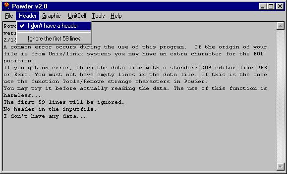
Then open the file as Ascii, and choose the file in question.
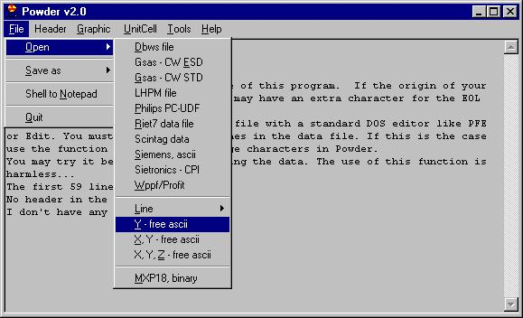
If this is successful you will see some messages (this is what is called Report Pad in this program), in this case what we can see is:
-------------------------------------------------
Y data file, ascii
The filename is C:\WINDOWS\Desktop\NAC-test-2.UXD
59 line(s) will be ignored.
The number of points is: 6501
Done...
2/15/99 5:26:39 PM
--
NOTE: I have noticed a frequent error in the use of this program. When
the data file has been e-mailed without being zipped an extra EOL character
appears (I guess it is related to different definition of EOL for DOS and
Windows ?). If you look at this kind of file with DOS/Edit you can see alternating
empty lines with data. These empty lines will "confuse" the program. Therefore
you should remove them by the command Tools/Remove strange characters. The
same procedure should be used for files coming from Unix and flavors of Unix.
--
We can directly inspect the data once read by choosing Graphic in the menu. We get this message
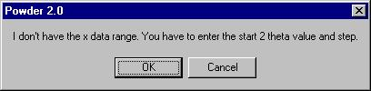
and we answer 10 for 2 theta and 0.02 for step (this message comes when the program does not know the starting value and step). Following, the Graphic window is shown:
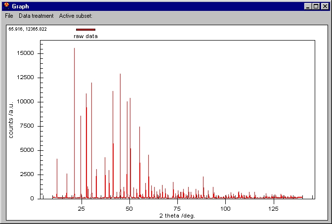
The scale is automatically
adjusted to fit all the data. In the top left corner we can see two values
65.916, and 12365...: these are the coordinates of the mouse on the screen.
You can roughly inspect the data by this method.
You can zoom as you like by dragging the mouse on the screen:
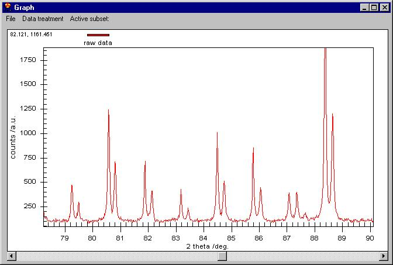
On the zoomed graph a
horizontal bar appears. Clicking on it you can move to the right or left by
keeping the same zoom as here. You can go back to the initial zoom by right-clicking
on the graph area and choosingUndo zoom.
Several other menus are available here, most of them are easy to understand.
When you right-click on the graph an important menu allows changing some
parameters:
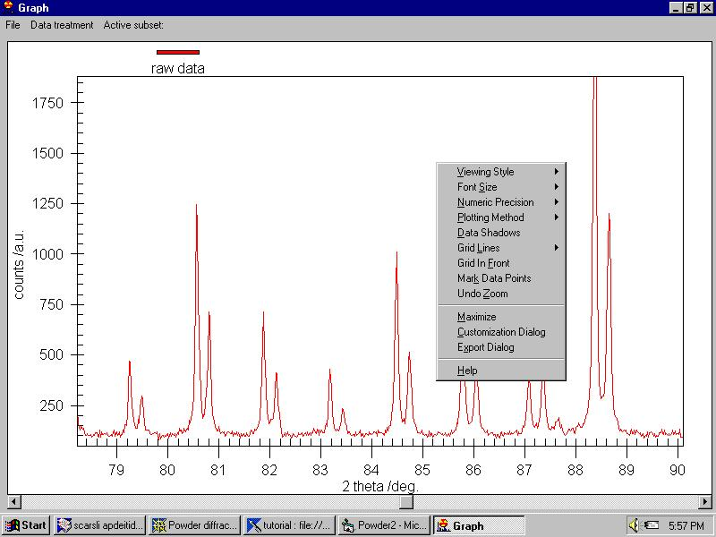
Note that we can resize the graph at any time. The menu (which can be invoked -for people hating the mouse- by File/General Options command as well) contains:
Viewing style (monochrome
or color)
Font size
Numeric precision
Plotting method
Grid lines
Grid in front
Mark data points
Undo zoom
Maximize
Customization dialog
Export dialog
Help
Some of these menus are
self explanatory; note that Mark Data Points is extremely slow.
There are two interesting options here: Customization Dialog and
Export Dialog, both of them available also from the File menu.
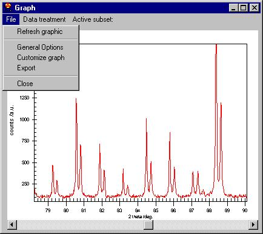
By Customization Dialog (equivalent with File/Customize Graph)
we open the following menu.
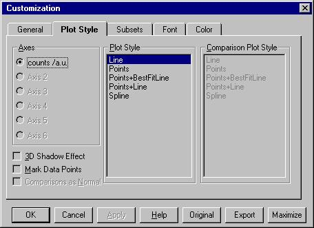
The most important command here is Subsets which is described later.
The second menu is Data
treatment which allows:
-smooth by Savitzky Golay, Adjacent averaging or a Moving Window algorithm;
-remove background (automatic or manual),
-remove K alpha 2,
-Find peaks,
-Add peaks (not shown here but removing some of the peaks can be done easily,
just click on the marker)
-Export peaks (when you have already determined them)
-Show experimental peaks
-Show simulated peaks
-Intensity correction
-zero correction
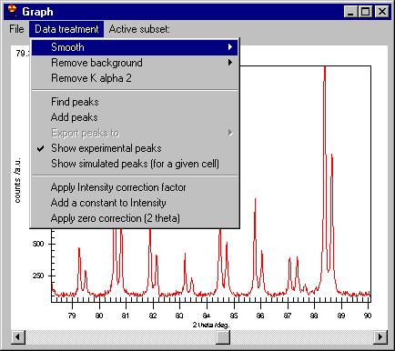
The values detected are
sent to the grid as 2theta and the intensity as weight (the intensity is
however ignored hereafter).
You can try to index these by Ito or Dicvol methods. Let's try ITO, select
Cell/ Automatic indexing/ Use Ito and the following screen appears:
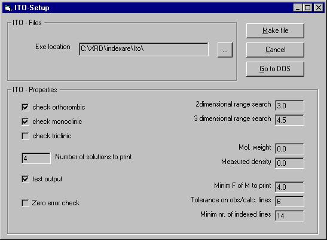
Only the basic options
in ITO can be set up here (NOTE: ITO and DICVOL are independent programs which
you should install before using the program Powder. These two well known
programs are neither written nor recommended or supported in any way by me!).
The data files saved by Powder 2.0 areito.inp and dicvol.inp
in the location chosen by Exe location textbox.
In the EXE location field you have to select the location of the program
Ito or a directory where the input file ITO.INP should be created when pressing
Make file button. You have to go to the DOS end start ITO by yourself.
It gives several solutions (among the suggestions the true solution <much
easier to decide when you know the true result, :)>,...)
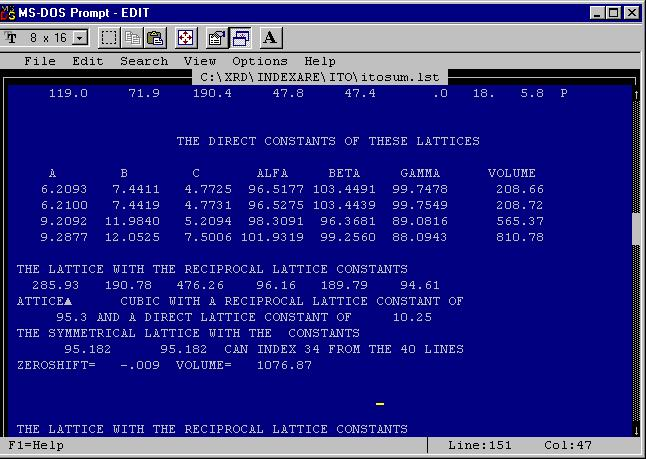
If you want you can check
that one of the solutions is the correct one.
Go to the UnitCell window and enter the value of the unit cell you want
to check and the command simulate
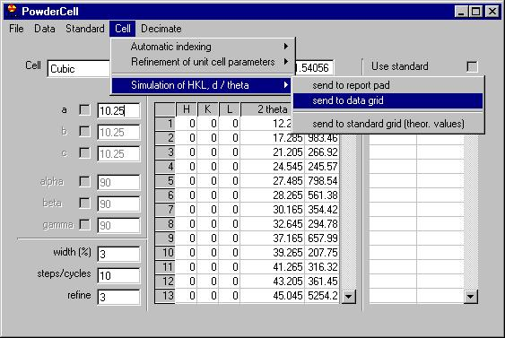
The program will compute the theoretical values of 2 theta; select Send DataGrid to Graphic
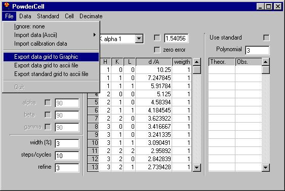
and these values will be marked with crosses on the graphic. Note: the intensity at which the crosses are put are determined by the value stored in the column Weight. You can easily add a constant to these values
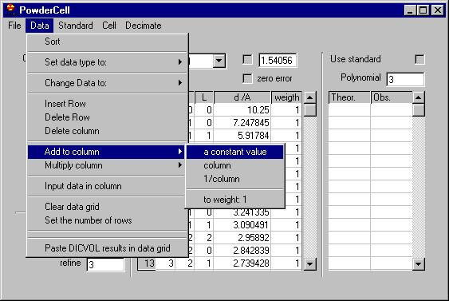
let' say 2000...
Make sure that the menu Show simulated values is checked. You get this kind
of figure...
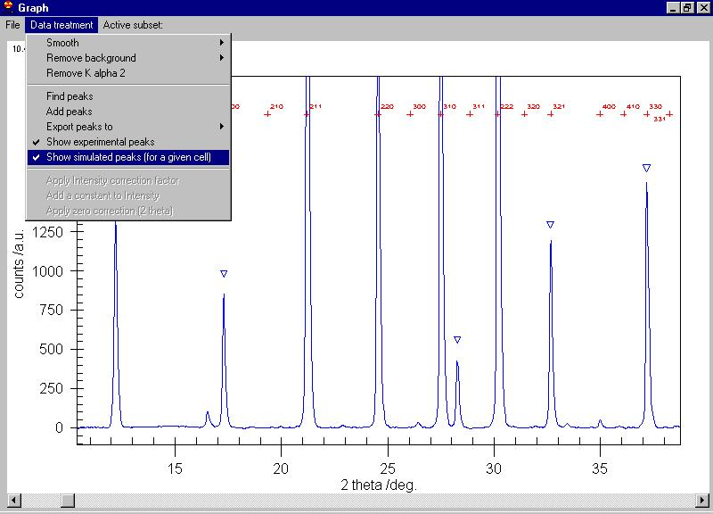
You can print or export
this data as you wish.
When exiting the Graphic window, if you want to keep some data (for instance
Smoothed data) make sure that the Smoothed data is checked in the
Active Subset menu.
You can see 8 graphics at a time (but is difficult to understand them). Let's see corundum (a DBWS file provided by Lachlan Cranswick). We know that is a good DBWS data file so we can read it directly by File/Open/DBWS file from the main part of the program. Then we choose graphic and add a title and subtitle to the graphic. We get this.
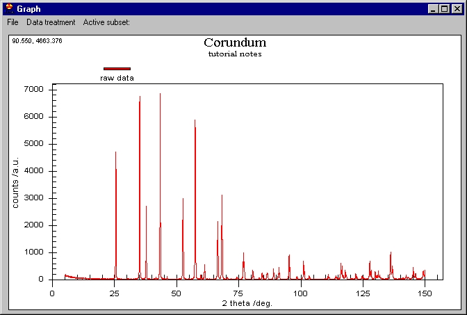
We can apply a smooth to this and then check the result (here is shown the smoothed data and what was removed by smoothing).
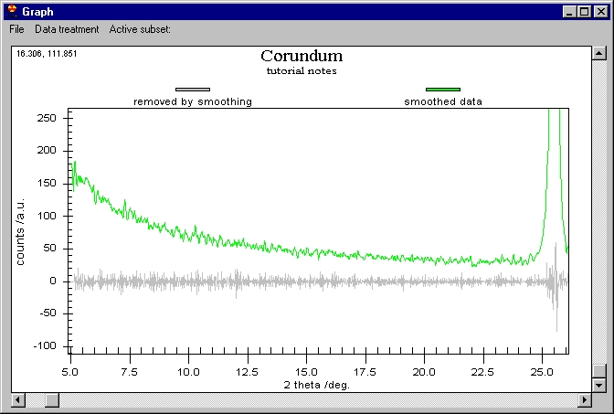
We should remove the Background now. If the Background is rather small and can be well defined by a low degree polynomial you can apply a Manual Correction (in Remove Background menu). If we want to remove the background of the Smoothed data we should choose Active subsets/Smooth data. In the following figure the Smoothed and Raw data are shown (note the point markers, when showing them be veeeeeery patient).
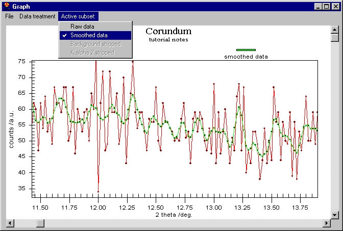
From now on, as long as the Smoothed Data menu remains checked, all the modifications will be performed on Smoothed data. If you smooth again the old smooth data will be replaced with the new values.
Manually removing the Background requires choosing some data points. First we should choose the polynomial degree, let's say 3 is enough (the program can accept a degree up to 8 but I do not recommend going to that value). Then we choose data points (the more the merrier) by moving a cursor through points). Choose a point by moving the cursor then Click on Set point or Alt+S to keep the value of the cursor for interpolation. When finished choose Done.
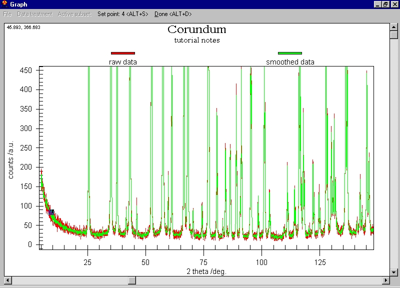
The program will compute the interpolation polynomial based on the values you choose. I selected for this tutorial 12 points and I got this ugly results:
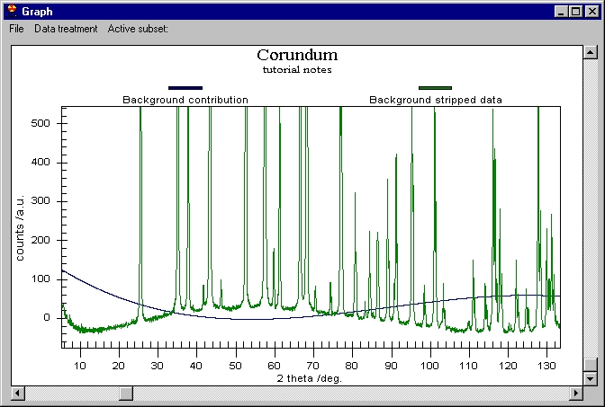
The Background contribution is shown so as you can see what it has computed (this is an example of how should not be the background; you should do better than this).
Now let's remove the background in a better way (from the raw data, we choose Active Subset/Raw data) and get this.
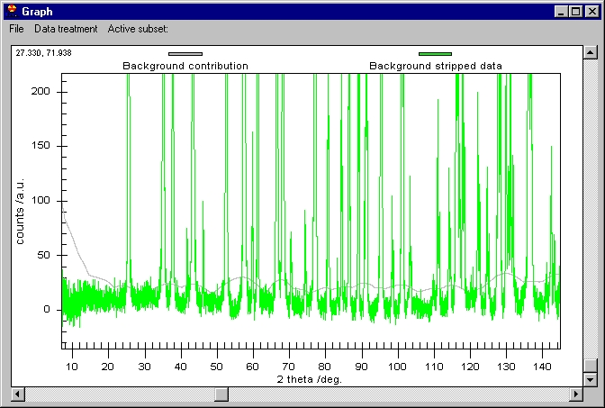
And now let's smooth the Background removed data (we should chooseActive Subset/Background stripped data) we obtain this:
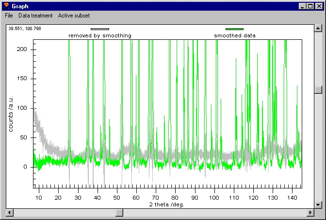
Note that the Smoothed data contains the Background removed and smoothed data.
If we want to quit the Graphic Window now we will get a message:
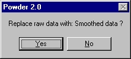
That is, if the Active Subset/Smoothed data is checked you will be
asked if the data which you read should be replaced by the Smoothed data.
If you do not choose an Active subset no matter what modifications
you do in the Graphic window the read data will not be replaced.
Enjoy and try it extensively to learn how it works.
---
Final note: Remember to register if you'll ever want to ask something
or to receive updates and bug reports. If not, you are on your own.
--
Small print: Use the program at your own risk...
Some details about these functions (from www.ccp14.ac.uk).
|
With the latest Powder4 for Windows by Nita Dragoe will allow you to merge and normalise up to 10 files into a single file (calculating appropriate ESDs for each count). For this you need to give each pattern a "monitor" value (counting time is probably the best way for most scans). This is done via the Powder v4 interface as shown below. Following are a few tips on how to use the latest Powder4 (i.e. version 0.3b) if you want to merge powder XRD files. WARNING: this is a dangerous operation, do not massage your data; make sure you know what you are doing. First run Powder for Windows (make sure you have the latest versions) A few instructions are listed on this panel ; read this from time to time, it contains some useful hints on what's going on with the program. 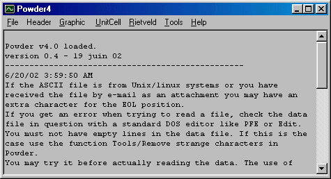 |
|
We are going to merge 10 files. Normally you have to conver the files into column XY, or XY_ESD format. In the above example data, the UDF files have been converted into XY format using Convert. All these files have the first line as header, so we'll have to "tell" the program how to handle this. First, we click on Header/I don't have a header (this is optionally here but in many cases it's important to instruct the software that there is no header to look for). Then we click on Header/Ignore menu, just like in the following picture: Now this is important : you have to instruct the program to ignore the first line otherwise you'll get a mess. Alternatively you can delete all the comments from the file but it's better to keep the original header in place (do not mix up the files!!!). 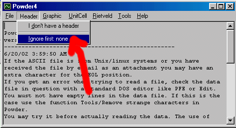 |
|
A small window will appear in which you insert (an integer) how many lines will be ignored. Cancel or 0 have the same effect. After that you can see listed in the menu Header/Ignore how many lines are going to be ignored. By line, this means everything up to an EOL character. 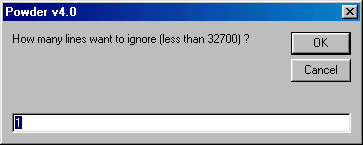 |
|
All the Merging files have to be in the same format (the same number of comments, the same step, the same wavelength). It is not necessary to have overlapping ranges, you may as well just add to files say one having data from 20 to 90 the other from 90 to 120. There are two possibilities for merging files: either XY ascii files or XYZ ascii files. For the first case the ESD will be computed internally; then everything is the same. In the following we will merge the three files : we choose File/Merge XY files (File, Merge XY Files) and add the files via the dialog box. Give the appropriate "normalization / monitor" value to the right of the file name. In this case, they are all 1 (equally weighted or 1 second per step in the counting time) 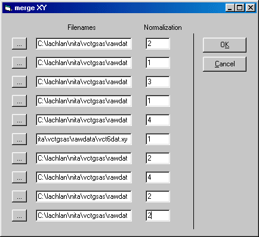 |
|
Now click OK You will be prompted to output to a filename (enter this and the directory you wish the file to be place in); then you should get the following style of "OK" message: 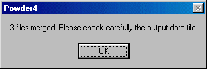 This creates a file in the following style of format (2-theta, counts, ESD, ready to be converted into other formats such as GSAS) -> merged 15/07/02 21:16:56
17.00 , 9.00 , 1.50
17.02 , 6.50 , 1.27475
17.04 , 6.00 , 1.22474
17.06 , 4.50 , 1.06066
17.08 , 5.50 , 1.1726
17.10 , 5.00 , 1.11803
17.12 , 9.50 , 1.5411
17.14 , 4.00 , 1.00
17.16 , 6.50 , 1.27475
17.18 , 7.00 , 1.32288
17.20 , 7.50 , 1.36931
17.22 , 6.00 , 1.22474
17.24 , 5.00 , 1.11803
17.26 , 5.00 , 1.11803
17.28 , 7.00 , 1.32288
17.30 , 6.50 , 1.27475
17.32 , 7.00 , 1.32288
17.34 , 7.50 , 1.36931
|
|
The Merged data is still in memory so you can still save this into other formats, such as XYZ, ASCII or GSAS ESD format. For creating a GSAS ESD file, just select File, Save As, Gsas - CW ESD 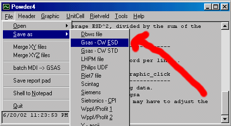 Following is the top of the newly created GSAS file Sample Title
BANK 1 6145 1229 CONST 1700 2 0 0 ESD
9.0 1.5 6.5 1.3 6.0 1.2 4.5 1.1 5.5 1.2
5.0 1.1 9.5 1.5 4.0 1.0 6.5 1.3 7.0 1.3
7.5 1.4 6.0 1.2 5.0 1.1 5.0 1.1 7.0 1.3
6.5 1.3 7.0 1.3 7.5 1.4 10.0 1.6 5.0 1.1
7.0 1.3 3.5 0.9 8.0 1.4 7.5 1.4 8.0 1.4
6.0 1.2 10.5 1.6 7.0 1.3 6.5 1.3 6.0 1.2
5.0 1.1 6.5 1.3 7.0 1.3 6.5 1.3 8.5 1.5
11.0 1.7 9.0 1.5 8.5 1.5 6.5 1.3 10.0 1.6
10.5 1.6 8.5 1.5 10.5 1.6 11.0 1.7 13.0 1.8
7.5 1.4 8.0 1.4 10.5 1.6 5.5 1.2 7.5 1.4
7.5 1.4 11.0 1.7 8.5 1.5 13.0 1.8 11.0 1.7
10.0 1.6 20.5 2.3 18.5 2.2 14.0 1.9 14.0 1.9
17.0 2.1 23.0 2.4 24.5 2.5 22.5 2.4 26.5 2.6
34.0 2.9 55.0 3.7 62.0 3.9 77.5 4.4 120.0 5.5
127.5 5.6 128.5 5.7 107.0 5.2 67.5 4.1 43.0 3.3
19.5 2.2 16.5 2.0 13.0 1.8 11.0 1.7 13.0 1.8
|
|
If you are in the mood to create other files (e.g., CPI, just select File, Save As, Sietronics - CPI. However, note that the ESDs will not be included in this format. 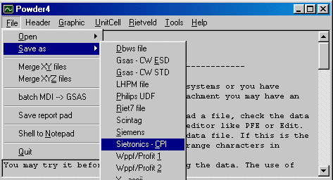 Following is the top of the newly created CPI file SIETRONICS XRD SCAN 17 139.9 0.02 Cu 1.54056 16-1-1998 1 SampleIdent SCANDATA 9 6.5 6 4.5 5.5 5 9.5 4 6.5 7 7.5 6 5 5 7 6.5 7 7.5 10 5 7 3.5 8 |
Notice
There are some limitations in the use of this program and probably there
are some bugs too. It may be slow but it can read as many data as you have,
a special attention was paid to the "friendly" characteristic. Some comments
may help you out of trouble.
And now, the usual stuff:
License Agreement
This software is provided "as is" and without warranties of any
kind; use it on your own risk.
If you don't like it don't blame me but don't use it. I don't
guarantee for any accuracy and/or meaning of the output.
You are hereby licensed to use this software if you are from
a non-profit making institution only. You may make as many copies of the
software as you wish. You may give exact copies (including this help file)
of the original software version and redistribute the complete and unmodified
version via electronic means. You are specifically prohibited from charging
a fee, or requesting donations, for any such copies.
I you want to use this software, you are requested to
send an e-mail to the author, stating your name, institution and the version
you have. This is for bug reports and updates. Future correspondence regarding
this program will be made only to the people on my "user list" where you can
stay as long as you want (and to encourage you, I will not answer to any
questions if you are not on that list).